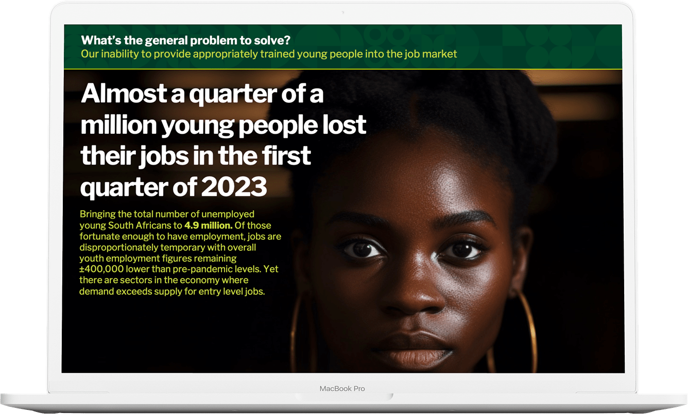

Project case study: DigiSkills
DigiSkills was a pilot, in collaboration with Microsoft Philanthropies and Afrika Tikkun Services, to create sustainable livelihoods for previously disadvantaged young people through in-demand Digital Skilling.
Objective
Provide no-cost world class digital skills via Microsoft's learning platform in partnership with "cradle to career" NGO, Afrika Tikkun. Create sustainable income earning opportunities for graduates in high-demand areas.
Role & Responsibilities
I championed and led the DigiSkills pilot on behalf of Nedbank, working closely with Microsoft's Manager for Digital Development Programs and Afrika Tikkun Service's Chief Executive Officer and our respective teams.

Approach & Strategy
- Worked with partner organisations to design, secure funding, enlist executive sponsorship and launch a pilot targeting 5,000 participants across South Africa.
- Held extensive engagements with local and global stakeholders to gain insights into effective interventions, including organisations like WeThinkCode, LinkedIn and Harambee.
- Developed a holistic, and highly effective solution, incorporating structural access to skills, coaching, certification and work readiness.
Outcome & Impact
- 34,047 registrations (Target: 12,500)
- 48,216 courses completed (Target: 6,500)
- 2,238 sustainable livelihoods created (Target: 1,740)
The below video highlights the impact that's possible when organisations innovate at the intersection of their core competencies and pressing social challenges.
← Home | Previous project
Get in Touch.
Write: me@ramo.one | Connect: LinkedIn | Call: +27 84 700 4449